2023-02-16 如何理解Seq2seq
目录
先搞清楚几个基本概念：
Seq2seq是一个概念，它的表现形式就是有encoder和decoder的一个结构。换言之，有encoder和decoder就可以说这是一个Seq2seq模型。编码器或者解码器具体可以用CNN、RNN、LSTM或者attention来构建。
transformer是一种基于Attention的Seq2seq。
Seq2seq
- input是一个sequence， output也是一个sequence，但是维度由模型决定。
- 例子：
- 语音辨识：一串语音转为”今晚吃什么？“几个文字。
- 机器翻译
- 语音翻译：输入machine learning，输出”机器学习”。
- 为何不将”语音辨识“和”机器翻译“结合起来，因为有的语言没有文字
结构和原理
Seq2seq由一个encoder和一个decoder决定
Encoder
- input是一个sequence， output也是一个sequence。
- input vector加上positional encoding，然后经过multi-head attention，然后进行residual + layer normalization，然后经过FC，再做一次Add&Norm，是这个encoder的输出。这个过程会重复。
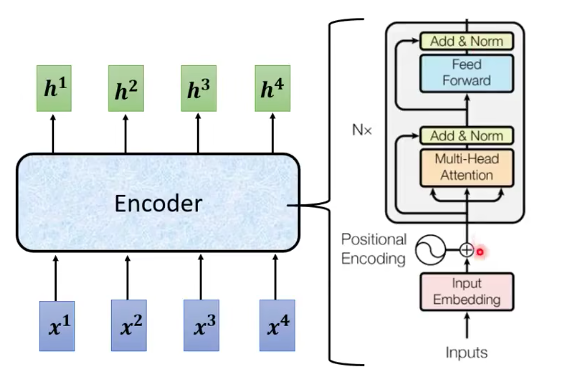
- 更细节的设计：
- input vector进来之后，经过self-attention，input和output相加，然后进行一层layer normalization。然后进入FC层，再进行一次Add&Norm（和自己相加&Normalization），这个输出就是一个block的输出。
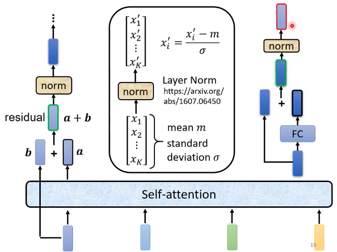
- residual connection：输入与输出相加，防止层级过高导致的梯度消失。
- layer normalization：
- 输入一个向量，输出一个向量，不需要考虑batch中其他的向量。
- 对同一个feature，同一个example不同的dimension去计算。（这里feature就是example）
- 做法：计算它 的mean $m$和standard deviation $\sigma$
$$ x_i^\prime =\frac {x_i - m} {\sigma} $$
- batch normalization：
- 对同一个dimension，不同的example，不同的feature去计算mean和standard deviation
Decoder
- decoder有两种，一种叫auto-regressive。这里讲的都是auto-regressive。
- decoder的输入：
- 在前边先加一个特殊的符号：BOS。
- 每个输入可以表示成一个one hot vector。例如”机器学习“加上BOS就是5个one hot vector。
- decoder的输出：
-
想好decoder输出的单位是什么，假设我们做的是中文的语音辨识，那么decoder输出的就是中文，那么vocabulary就是中文的数目，常用4000个字。不同的语言输出的单位不一样，英文可以输出字母，word， subword作为单位。
-
1个Input vector进去之后，出来1个output vector，它的长度和vocabulary的size是一样的。他会给vocabulary的每一个单位一个分数，分数最高的就是最后的输出。5个input vector，出来n个output vector。(n需要decoder自己决定)
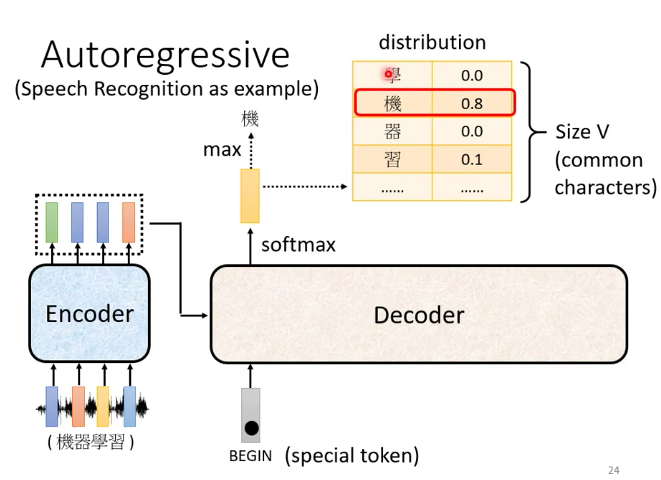
-
-
decoder看到的输入，其实就是前一个时间自己的输出。
- 这里有一个问题，如果输出错误，那么输入也会错误，会造成error propagation。
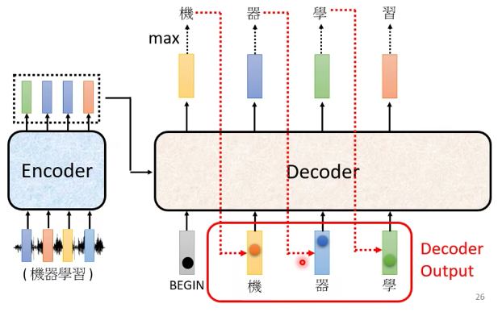
Decoder和Encoder对比
- decoder与encoder结构类似
- decoder有一层masked multi-head attention
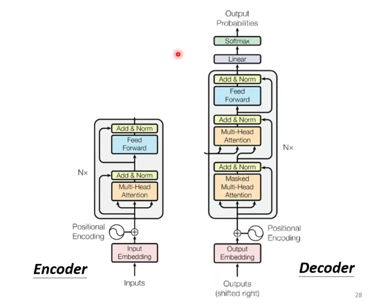
之前的self-attention，都要看过完整的input之后才做决定。$b^1$是由$a^1$到$a^4$一起决定的。
masked attention 的意思是：
产生$b^1$的时候，只能用$a^1$。
产生$b^2$的时候，只能用$a^1$和$a^2$。
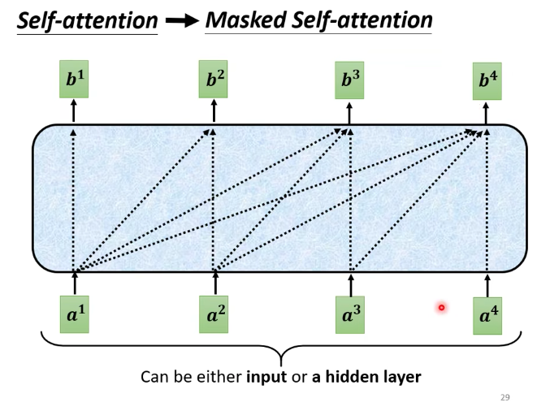
- 为什么要masked？
想想decoder是如何运作的的。decoder的输出是一个一个产生的。先有$a^1$，然后有$a^2$。再计算$b^1$的时候，是没有$a^2$的，是没有办法把$a^2$计算进去的。
encoder是一次性把$a^1$到$a^4$一起读进去。
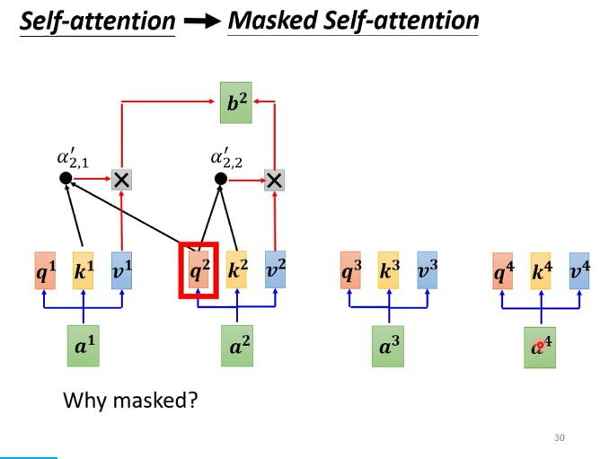
- decoder必须自己决定输出的长度。那么如何决定呢
- 加一个stop token。decoder看到这个符号就停止。
Encoder-Decoder
- decoder结构中有一个cross attention，它的输入中有两个是来自encoder的输出，一个是来源自己。
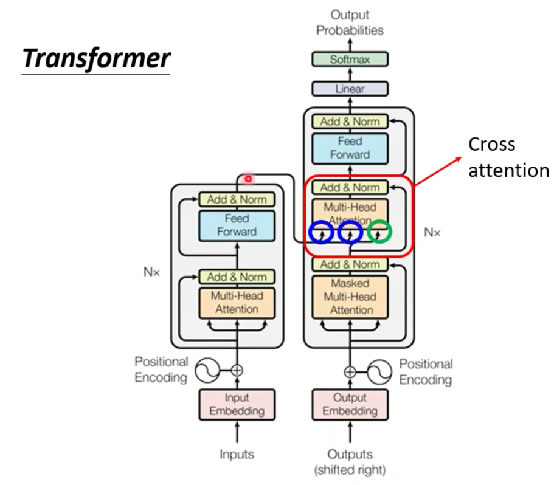
- encoder产生kv，decoder产生q
如何做训练
- 假设做语音识别，要有训练资料，要收集一堆语音资料。
- 我们期待，把begin丢给decoder的时候，它的第一个输出，应该要跟“机”越接近越好。在ground truth里面， “机”这个字会被表示成一个one hot vector。decoder的输出是一个distribution，是一个几率的分布，我们希望这个分布能够接近“机”的one hot vector，所以要去计算one hot vector和这个分布的cross entropy，然后希望这个cross entropy越小越好。在产生完所有的输出之后，我们希望这个总的cross entropy越小越好。
这个计算很接近分类。可以理解为，每一次decoder在产生一个token输出的时候，就是做了一次分类。
- decoder的输入是正确答案。
也就是说，在有Begin的情况下，输出“机”，在有begin和”机”的情况下，输出 “器”，在有begin、“机”和”器”的情况下，输出“学”。
teacher forcing：在训练的时候，using the ground truth as input
- 训练的时候decoder的输入给的是正确答案，推断的时候有可能出错，这里有一个mismatch。
- 如何解决：在训练的时候也给一些错误的输入，可能会学的更好，这个叫scheduled sampling。
- 但是scheduled sampling，会伤害到transformer的平行能力。transformer有自己的scheduled sampling
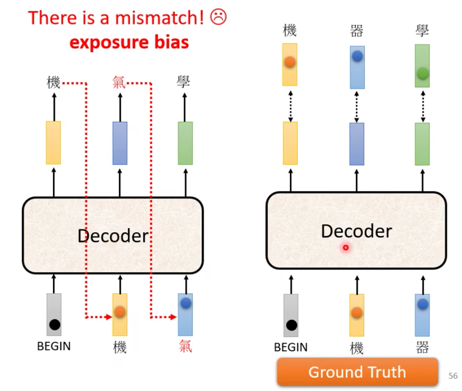
- 训练tips
- Copy Mechanism：decoder没有必要创造输出，可以直接从输入的东西里面复制。
- 在做Chat-Bot：-你好，我是小花。-小花你好，欢迎你！
- 在做摘要：
- 数据量：要训练这种，需要百万篇文章（把标题当做摘要）
- 从课文里面复制一些句子出来，这种叫pointer network。
- Guided Attention
- 看到中文的句子，输出这段语音。有时候语音会漏字。
- input and output monotonically aligned。强制它monotonic attention
- 对于有位置需求的语音：先说第一个字，再说第二个字等等。
- location-aware attention
- 看到中文的句子，输出这段语音。有时候语音会漏字。
- Beam Search
- 假设decoder只能输出A和B两个字。那么decoder会每一次选择输出A还是B。 根据概率最大的选择，叫做greedy search。
- greedy search不是最优，全局搜索也不可能。
- 解决方法就是beam search。（这里没懂）
- Copy Mechanism：decoder没有必要创造输出，可以直接从输入的东西里面复制。
- 优化 Evaluation metrics
- 评估的标准，Bleu score是decoder先产生一个完整的句子之后，再去跟ground truth的句子比较。
- 训练的时候，每一个token的输出都是单独产生的。那么minimize cross entropy真的能够使bleu score最好吗？不一定。
- 所以评判标准不是cross entropy 而是bleu score
- 可不可以在training的时候就最大化bleu score呢？ 不能，因为它不能微分
- 这时，可以用强化学习 RL
应用
- question answering ：
- 很多问题NLP的任务都可以转化为问答QA，而QA可以用Seq2seq模型来解决。
- 原理：输入是question和context拼接起来，输出是answer。
- 例子：
- 机器翻译-这个句子的德文翻译是什么
- 摘要：这段文字的摘要是什么？
- 情感分析：这篇文章是正面还是负面？
- 对多数nlp任务，专门的模型比seq2seq 会得到更好的结果。
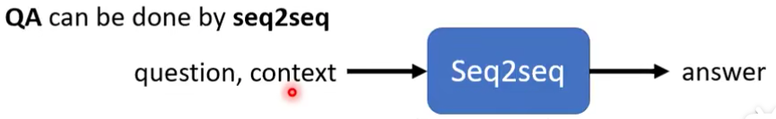
-
句法分析：syntactic parsing 也可以用seq2seq来做。树可以用括号链接文字来表示。
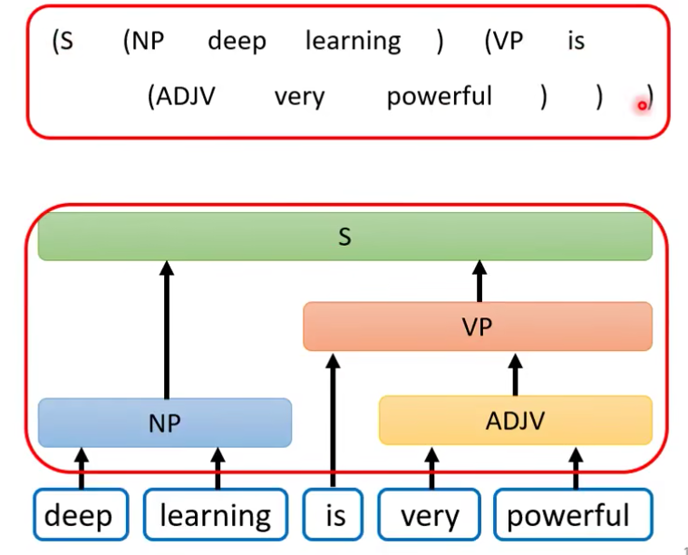
-
multi-label classification： 也可以用seq2seq
- multi-class classification： 有不止一个class，机器得选（有且只能）一个class出来
- multi-label classification：一个事物可以有=属于不同的class
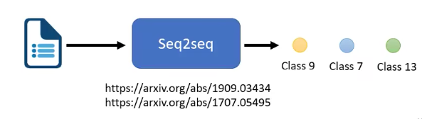
-
object detection ：也可以用seq2seq